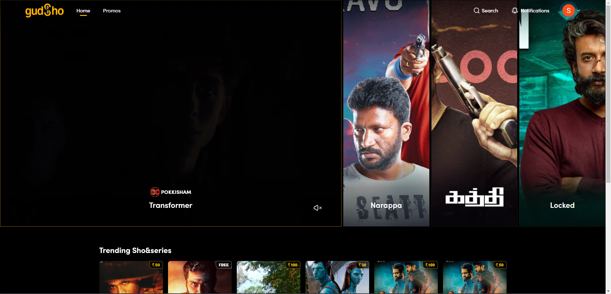
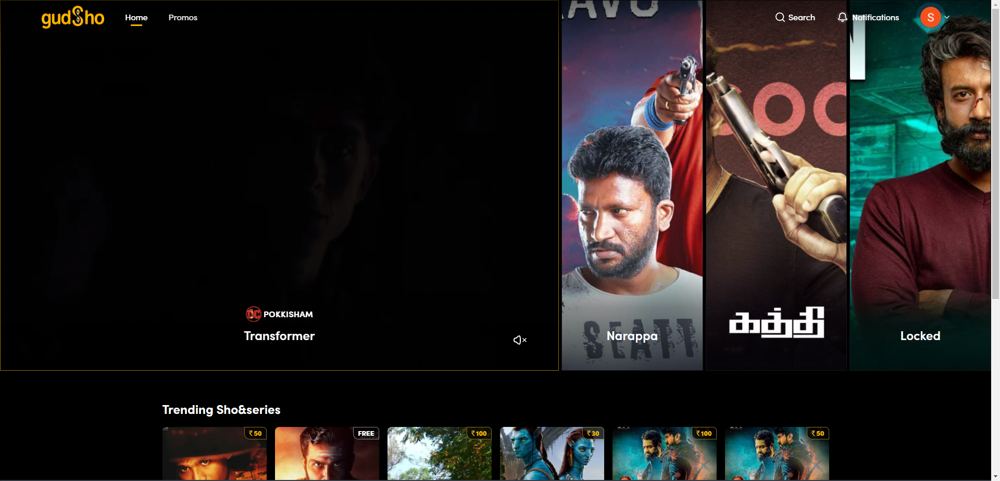
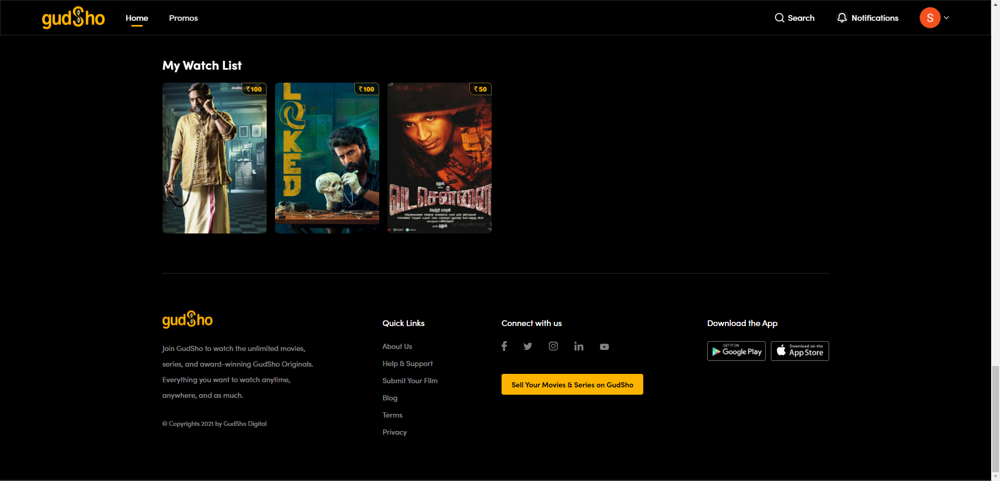
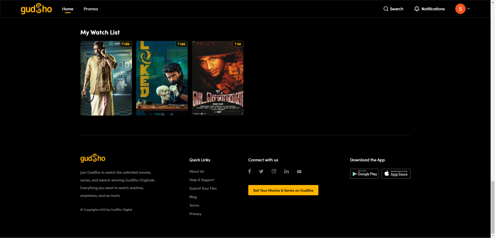
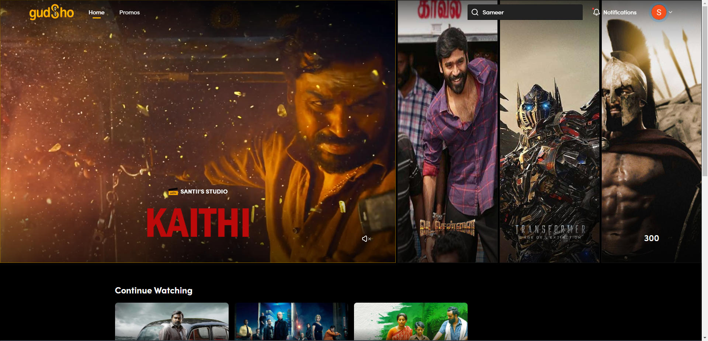
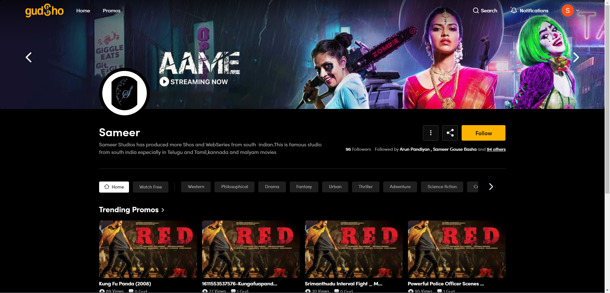
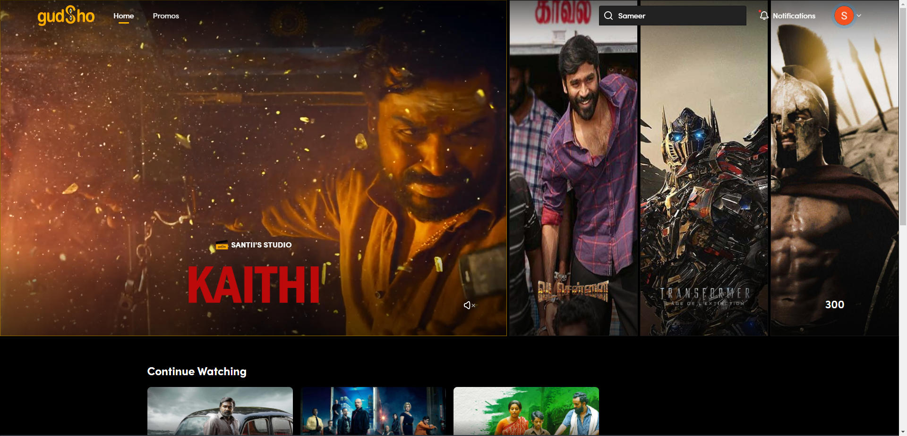
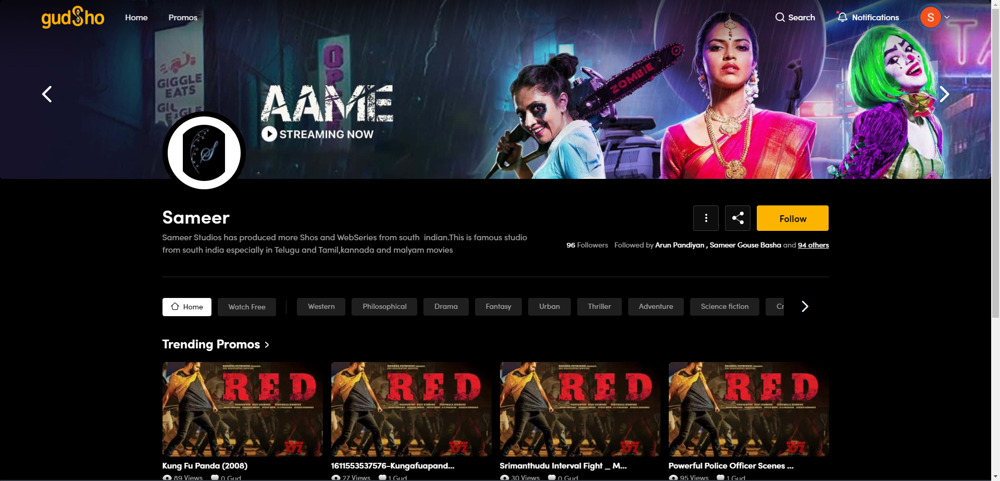

Started
Aug 10, 2021 08:48:35 AM
Ended
Aug 10, 2021 09:51:21 AM
Features Passed
1
Features Failed
4
Features
Scenarios
Steps
Timeline
Tags
| Name | Passed | Failed | Skipped | Others | Passed % |
|---|---|---|---|---|---|
| @HomePage | 16 | 1 | 0 | 0 | 94.118% |
| @ShodetailPage | 2 | 10 | 0 | 0 | 16.667% |
| @StudioPage | 0 | 12 | 0 | 0 | 0% |
| @Footer | 13 | 0 | 0 | 0 | 100% |
| @Paywall | 18 | 4 | 0 | 0 | 81.818% |
-
GudSho Home Page
08:48:37 AM / 41:11:895 Fail
GudSho Home Page
08.10.2021 08:48:37 08.10.2021 08:59:49 41:11:895 · #test-id=1PassNotification Page RedirectionGiven verify notification tabWhen verify notification page redirected to correct pageThen Click on notifications link and it should redirect to notifications tabPassUser ProfileGiven verify user profile iconThen verify profile icon pagePassHome page Banner RedirectionGiven Select first card from home banner and check sho detail page redirectionPassPromo Card RedirectionGiven Select first promo card from promo rowThen verify redirection of promo playerPassSho Card RedirectionGiven Click on sho card from any row and verify its redirected to correct sho detail pagePassStudio Card RedirectionGiven Click on studio card from studio row and verify its redirected to correct studio detail pagePassThis test is to verify the follow button from homeGiven From home page click onfollow button and verify the button changesPassThis test is to verify the added sho in addto watchlistPassThis test is to verify the added sho in addto watchlistGiven From home page click on add to watchlist in vada chennai title cardWhen check card availbility on my watchlist rowPassThis test is to verify the share button on sho cardPassThis test is to verify the share button on sho cardGiven From home page click on share button in kaithi title cardWhen Click on share button from the card and verify share popupPassThis test is to verify the share button on sho card from see all pagePassThis test is to verify the share button on sho card from see all pageGiven From home page click on sho type row see all hyperlinkWhen From home page click on share button in vada chennai title cardAnd Click on share button from the card and verify share popupPassThis test is to verify the share button on sho card from see all pageGiven From home page click on promo type row see all hyperlinkAnd Close promo player Two Years Of Kaala - The Masterpiece _ Rajinikant and verify redirectionPassThis test is to verify the sho detail page redirection from home continue watchingPassThis test is to verify the sho detail page redirection from home continue watchingGiven Search any scedue and verfiy its redirected to correct pageWhen Play watch free content and close the playerAnd Navigate to gudsho home and click on sho name hyperlink from continue watching and verify redirectionFailThis test is to verify the added sho in addto watchlist from see allFailThis test is to verify the added sho in addto watchlist from see allGiven From home page click on sho type row see all hyperlinkWhen Hover and click on click on add to watchlist in Transformer: The Age Of Extinction title cardAnd Navigate back and Transformer: The Age Of Extinction availbility on my watchlist rowThen Remove from watchlitStep skippedsteps.Hooks.teardown(io.cucumber.java.Scenario)image PassThis test is to verify the sho redirection from see all pagePassThis test is to verify the sho redirection from see all pageGiven From home page click on sho type row see all hyperlinkWhen From see all page click on sho card vada chennai and verif redirectionPassThis test is to verify the share button on promo cardPassThis test is to verify the share button on promo cardGiven From home page hover on Two Years Of Kaala - The Masterpiece _ Rajinikant promo cardWhen Click on share button from the card and verify share popupPassThis test is to verify the share button on promo card from see all pagePassThis test is to verify the share button on promo card from see all pageGiven From home page click on promo type row see all hyperlinkWhen From home page hover on Two Years Of Kaala - The Masterpiece _ Rajinikant promo cardAnd Click on share button from the card and verify share popupPassThis test is to verify the sho detail page redirection from promo playerPassThis test is to verify the sho detail page redirection from promo playerGiven From home page hover on Two Years Of Kaala - The Masterpiece _ Rajinikant promo card and close the playerThen On home page check liked Two Years Of Kaala - The Masterpiece _ Rajinikant is showing in my gud promos
PassThis test is to verify the sho redirection from see all pagePassThis test is to verify the sho redirection from see all pageGiven From home page click on sho type row see all hyperlinkWhen From see all page click on sho card vada chennai and verif redirectionPassThis test is to verify the share button on promo cardPassThis test is to verify the share button on promo cardGiven From home page hover on Two Years Of Kaala - The Masterpiece _ Rajinikant promo cardWhen Click on share button from the card and verify share popupPassThis test is to verify the share button on promo card from see all pagePassThis test is to verify the share button on promo card from see all pageGiven From home page click on promo type row see all hyperlinkWhen From home page hover on Two Years Of Kaala - The Masterpiece _ Rajinikant promo cardAnd Click on share button from the card and verify share popupPassThis test is to verify the sho detail page redirection from promo playerPassThis test is to verify the sho detail page redirection from promo playerGiven From home page hover on Two Years Of Kaala - The Masterpiece _ Rajinikant promo card and close the playerThen On home page check liked Two Years Of Kaala - The Masterpiece _ Rajinikant is showing in my gud promos -
Paywall Scenarios
08:59:49 AM / 42:40:409 Fail
Paywall Scenarios
08.10.2021 08:59:49 08.10.2021 09:12:29 42:40:409 · #test-id=132PassWatch List PopupPassWatch List PopupGiven Search any Talent and verfiy its redirected to correct pageAnd From sho detail page click on add to watchlistThen Vaildate Signin PopupPassPromo icon Gud PopupPassPromo icon Gud PopupGiven Search any Talent and verfiy its redirected to correct pageAnd From sho detail page click on any promoWhen while playing click on greate gud buttonThen Vaildate Signin PopupPassBuy Button PopupPassBuy Button PopupGiven Search any Talent and verfiy its redirected to correct pageAnd From sho detail page click on Buy buttonThen Vaildate Signin PopupFailSho Page Social Media Icons RedirectionPassSho Page Social Media Icons RedirectionGiven Search any Talent and verfiy its redirected to correct pageWhen Click on Share buttonThen Check share popup is displayed with social ionsFailSho Page Social Media Icons Redirectionsteps.Hooks.launchdriverandapplication()steps.Hooks.Closecookie()steps.Hooks.loginapplication()Given Search any Talent and verfiy its redirected to correct pageStep skippedWhen Click on Share buttonStep skippedThen Share the shoshare using all social iconsStep skippedsteps.Hooks.teardown(io.cucumber.java.Scenario)image FailPromo Player Social Media Icons RedirectionPassPromo Player Social Media Icons RedirectionGiven Search any Talent and verfiy its redirected to correct pageThen Share Vakeel Sab Theatrical Trailer and verify share popup and share icons are displayedFailPromo Player Social Media Icons Redirectionsteps.Hooks.launchdriverandapplication()steps.Hooks.Closecookie()steps.Hooks.loginapplication()Given Search any Talent and verfiy its redirected to correct pageStep skippedThen Hover on Vakeel Sab Theatrical Trailer card and share promo promoshare using all sharesStep skippedsteps.Hooks.teardown(io.cucumber.java.Scenario)imagePassFollow Studio PopUpPassFollow Studio PopUpGiven Search any studio santii's studio and verify it should redirected to correct pageAnd From studio detail page click on follow buttonThen Vaildate Signin PopupPassStudio Page Social Media Icons RedirectionPassStudio Page Social Media Icons RedirectionGiven Search any studio Sameer and verify it should redirected to correct pageWhen Click studio share iconThen Check share popup is displayed with social ions
FailPromo Player Social Media Icons RedirectionPassPromo Player Social Media Icons RedirectionGiven Search any Talent and verfiy its redirected to correct pageThen Share Vakeel Sab Theatrical Trailer and verify share popup and share icons are displayedFailPromo Player Social Media Icons Redirectionsteps.Hooks.launchdriverandapplication()steps.Hooks.Closecookie()steps.Hooks.loginapplication()Given Search any Talent and verfiy its redirected to correct pageStep skippedThen Hover on Vakeel Sab Theatrical Trailer card and share promo promoshare using all sharesStep skippedsteps.Hooks.teardown(io.cucumber.java.Scenario)imagePassFollow Studio PopUpPassFollow Studio PopUpGiven Search any studio santii's studio and verify it should redirected to correct pageAnd From studio detail page click on follow buttonThen Vaildate Signin PopupPassStudio Page Social Media Icons RedirectionPassStudio Page Social Media Icons RedirectionGiven Search any studio Sameer and verify it should redirected to correct pageWhen Click studio share iconThen Check share popup is displayed with social ions -
Footer Links & Profile Hover elements Redirection Scenarios
09:01:24 AM / 34:17:437 Pass
Footer Links & Profile Hover elements Redirection Scenarios
08.10.2021 09:01:24 08.10.2021 09:05:42 34:17:437 · #test-id=189Passgudsho logoThen verify gudsho logoAnd verify footer paragraph textAnd Verify Footer headingsPassAbout us page redirectionGiven click about us link and verify it should redirected to correct pagePassHelp&support page redirectionGiven click help&support link and verify it should redirected to correct pagePassSubmit your film page redirectionGiven click Submit your film link and verify it should redirected to correct pagePassBlog page redirectionGiven click blog link and verify it should redirected to correct pagePassTerms page redirectionGiven click terms link and verify it should redirected to correct pagePassPrivacy page redirectionGiven click privacy link and verify it should redirected to correct pagePassSell your movies & series on gudsho page redirectionGiven click Sell your movies & series on gudsho link and verify it should redirected to correct pagePassPlayStore App RedirectionGiven Check Play store App redirectionPassApp Store RedirectionGiven Check App store App redirectionPassSocial Links RedirectionGiven Check Facebook redirectionAnd Check Twitter redirectionAnd Check Instagram redirectionAnd Check Linkedin redirectionAnd Check Youtube redirectionPassCheck all profile hover elements redirectionsGiven Hover on profileThen Click on support menu and verify redirectionGiven Hover on profileThen Click on Friends menu and verify redirectionGiven Hover on profileThen Click on Account and settings menu and verify redirectionGiven Hover on profileThen Click on Signout and check toasterPassVerify Mobile Number and Name on profileGiven Hover on profileThen Click on Account and settings menu and verify redirectionAnd capture name and profile and verify with name and number -
Sho Detail Page Scenarios
09:05:42 AM / 51:17:288 Fail
Sho Detail Page Scenarios
08.10.2021 09:05:42 08.10.2021 09:26:59 51:17:288 · #test-id=272PassSho-Purchase & PaymentPassSho-Purchase & PaymentGiven Search any Talent and verfiy its redirected to correct pageWhen Buy the sho using Card with SuccessThen Verify after payment Talent is playing and close the playerPassPromo GudPassPromo GudGiven Search any Talent and verfiy its redirected to correct pageWhen Play Vakeel Sab Theatrical Trailer and like promoThen On home page check liked Vakeel Sab Theatrical Trailer is showing in my gud promosFailSho WatchlistFailSho Watchliststeps.Hooks.Closecookie()steps.Hooks.loginapplication()Given Search any Talent and verfiy its redirected to correct pageStep skippedWhen Add Talent in to watchlist and check the toaster messageStep skippedThen On home page check the added watchlist TalentStep skippedsteps.Hooks.teardown(io.cucumber.java.Scenario)image FailStudio Link RedirectionFailStudio Link Redirectionsteps.Hooks.launchdriverandapplication()steps.Hooks.Closecookie()steps.Hooks.loginapplication()Given Search any Talent and verfiy its redirected to correct pageStep skippedThen Click on Studio link and check redirected to studio detail pageStep skippedsteps.Hooks.teardown(io.cucumber.java.Scenario)image
FailStudio Link RedirectionFailStudio Link Redirectionsteps.Hooks.launchdriverandapplication()steps.Hooks.Closecookie()steps.Hooks.loginapplication()Given Search any Talent and verfiy its redirected to correct pageStep skippedThen Click on Studio link and check redirected to studio detail pageStep skippedsteps.Hooks.teardown(io.cucumber.java.Scenario)image FailContinue WatchingFailContinue Watchingsteps.Hooks.launchdriverandapplication()steps.Hooks.Closecookie()steps.Hooks.loginapplication()Given Search any Paytm and verfiy its redirected to correct pageStep skippedWhen Play watch free content and close the playerStep skippedAnd On sho detail page verify watch now button should change to resumeStep skippedThen On Home Page check continue wathing is showing PaytmStep skippedsteps.Hooks.teardown(io.cucumber.java.Scenario)imageFailSho detail infoFailSho detail infosteps.Hooks.launchdriverandapplication()steps.Hooks.Closecookie()steps.Hooks.loginapplication()Given Search any Narappa and verfiy its redirected to correct pageStep skippedWhen Check all sho detail info and check seemore popup if YesStep skippedThen check About section if about tab YesStep skippedsteps.Hooks.teardown(io.cucumber.java.Scenario)imageFailSho detail infosteps.Hooks.launchdriverandapplication()steps.Hooks.Closecookie()steps.Hooks.loginapplication()Given Search any Paytm and verfiy its redirected to correct pageStep skippedWhen Check all sho detail info and check seemore popup if NoStep skippedThen check About section if about tab NoStep skippedsteps.Hooks.teardown(io.cucumber.java.Scenario)image
FailContinue WatchingFailContinue Watchingsteps.Hooks.launchdriverandapplication()steps.Hooks.Closecookie()steps.Hooks.loginapplication()Given Search any Paytm and verfiy its redirected to correct pageStep skippedWhen Play watch free content and close the playerStep skippedAnd On sho detail page verify watch now button should change to resumeStep skippedThen On Home Page check continue wathing is showing PaytmStep skippedsteps.Hooks.teardown(io.cucumber.java.Scenario)imageFailSho detail infoFailSho detail infosteps.Hooks.launchdriverandapplication()steps.Hooks.Closecookie()steps.Hooks.loginapplication()Given Search any Narappa and verfiy its redirected to correct pageStep skippedWhen Check all sho detail info and check seemore popup if YesStep skippedThen check About section if about tab YesStep skippedsteps.Hooks.teardown(io.cucumber.java.Scenario)imageFailSho detail infosteps.Hooks.launchdriverandapplication()steps.Hooks.Closecookie()steps.Hooks.loginapplication()Given Search any Paytm and verfiy its redirected to correct pageStep skippedWhen Check all sho detail info and check seemore popup if NoStep skippedThen check About section if about tab NoStep skippedsteps.Hooks.teardown(io.cucumber.java.Scenario)image FailSho Card Watchist and RedirectionFailSho Card Watchist and Redirectionsteps.Hooks.launchdriverandapplication()steps.Hooks.Closecookie()steps.Hooks.loginapplication()Given Search any narappa and verfiy its redirected to correct pageStep skippedThen Check redirection of card and watchlist functionality of sho card on home pageStep skippedsteps.Hooks.teardown(io.cucumber.java.Scenario)imageFailMore like this Share popupFailMore like this Share popupsteps.Hooks.launchdriverandapplication()steps.Hooks.Closecookie()Given Search any narappa and verfiy its redirected to correct pageStep skippedThen Click on shareicon from shocard and verify share popupStep skippedsteps.Hooks.teardown(io.cucumber.java.Scenario)imageFailMore like this sho card FunctionalityFailMore like this sho card Functionalitysteps.Hooks.launchdriverandapplication()steps.Hooks.Closecookie()steps.Hooks.loginapplication()Given Search any narappa and verfiy its redirected to correct pageStep skippedThen click on more like this link and check watchlist toasterStep skippedAnd Check redirection of sho cardStep skippedsteps.Hooks.teardown(io.cucumber.java.Scenario)image
FailSho Card Watchist and RedirectionFailSho Card Watchist and Redirectionsteps.Hooks.launchdriverandapplication()steps.Hooks.Closecookie()steps.Hooks.loginapplication()Given Search any narappa and verfiy its redirected to correct pageStep skippedThen Check redirection of card and watchlist functionality of sho card on home pageStep skippedsteps.Hooks.teardown(io.cucumber.java.Scenario)imageFailMore like this Share popupFailMore like this Share popupsteps.Hooks.launchdriverandapplication()steps.Hooks.Closecookie()Given Search any narappa and verfiy its redirected to correct pageStep skippedThen Click on shareicon from shocard and verify share popupStep skippedsteps.Hooks.teardown(io.cucumber.java.Scenario)imageFailMore like this sho card FunctionalityFailMore like this sho card Functionalitysteps.Hooks.launchdriverandapplication()steps.Hooks.Closecookie()steps.Hooks.loginapplication()Given Search any narappa and verfiy its redirected to correct pageStep skippedThen click on more like this link and check watchlist toasterStep skippedAnd Check redirection of sho cardStep skippedsteps.Hooks.teardown(io.cucumber.java.Scenario)image -
Studio Detail page Scenarios
09:26:59 AM / 54:22:254 Fail
Studio Detail page Scenarios
08.10.2021 09:26:59 08.10.2021 09:51:21 54:22:254 · #test-id=374FailStudio ShareFailStudio Sharesteps.Hooks.launchdriverandapplication()steps.Hooks.Closecookie()steps.Hooks.loginapplication()Given Search any studio Sameer and verify it should redirected to correct pageStep skippedWhen Click studio share iconStep skippedThen Share the shoshare using all social iconsStep skippedsteps.Hooks.teardown(io.cucumber.java.Scenario)imageFailStudio Sharesteps.Hooks.launchdriverandapplication()steps.Hooks.Closecookie()steps.Hooks.loginapplication()Given Search any studio Sameer and verify it should redirected to correct pageStep skippedWhen Click studio share iconStep skippedThen Share the shoshare using all social iconsStep skippedsteps.Hooks.teardown(io.cucumber.java.Scenario)image FailStudio Banner RedirectionFailStudio Banner Redirectionsteps.Hooks.launchdriverandapplication()steps.Hooks.Closecookie()steps.Hooks.loginapplication()Given Search any studio Sameer and verify it should redirected to correct pageStep skippedThen Click on Banner image and verify redirection to correct sho detail pageStep skippedsteps.Hooks.teardown(io.cucumber.java.Scenario)image
FailStudio Banner RedirectionFailStudio Banner Redirectionsteps.Hooks.launchdriverandapplication()steps.Hooks.Closecookie()steps.Hooks.loginapplication()Given Search any studio Sameer and verify it should redirected to correct pageStep skippedThen Click on Banner image and verify redirection to correct sho detail pageStep skippedsteps.Hooks.teardown(io.cucumber.java.Scenario)image FailStudio Banner Redirectionsteps.Hooks.launchdriverandapplication()steps.Hooks.Closecookie()steps.Hooks.loginapplication()Given Search any studio Sameer and verify it should redirected to correct pageStep skippedThen Click on Banner image and verify redirection to correct sho detail pageStep skippedsteps.Hooks.teardown(io.cucumber.java.Scenario)image
FailStudio Banner Redirectionsteps.Hooks.launchdriverandapplication()steps.Hooks.Closecookie()steps.Hooks.loginapplication()Given Search any studio Sameer and verify it should redirected to correct pageStep skippedThen Click on Banner image and verify redirection to correct sho detail pageStep skippedsteps.Hooks.teardown(io.cucumber.java.Scenario)image FailFollow StudioFailFollow Studiosteps.Hooks.launchdriverandapplication()steps.Hooks.Closecookie()steps.Hooks.loginapplication()Given Search any studio Trail Studio and verify it should redirected to correct pageStep skippedWhen Click on Follow buttonStep skippedThen check toaster message and verify following textStep skippedsteps.Hooks.teardown(io.cucumber.java.Scenario)image
FailFollow StudioFailFollow Studiosteps.Hooks.launchdriverandapplication()steps.Hooks.Closecookie()steps.Hooks.loginapplication()Given Search any studio Trail Studio and verify it should redirected to correct pageStep skippedWhen Click on Follow buttonStep skippedThen check toaster message and verify following textStep skippedsteps.Hooks.teardown(io.cucumber.java.Scenario)image FailPromo Card RedirectionFailPromo Card Redirectionsteps.Hooks.launchdriverandapplication()steps.Hooks.Closecookie()steps.Hooks.loginapplication()Given Search any studio Sameer and verify it should redirected to correct pageStep skippedWhen verfiy promo playerStep skippedThen close playerStep skippedsteps.Hooks.teardown(io.cucumber.java.Scenario)image
FailPromo Card RedirectionFailPromo Card Redirectionsteps.Hooks.launchdriverandapplication()steps.Hooks.Closecookie()steps.Hooks.loginapplication()Given Search any studio Sameer and verify it should redirected to correct pageStep skippedWhen verfiy promo playerStep skippedThen close playerStep skippedsteps.Hooks.teardown(io.cucumber.java.Scenario)image FailSho Card RedirectionFailSho Card Redirectionsteps.Hooks.launchdriverandapplication()steps.Hooks.Closecookie()steps.Hooks.loginapplication()Given Search any studio Sameer and verify it should redirected to correct pageStep skippedWhen click sho card and verify its redirected sho detail pageStep skippedsteps.Hooks.teardown(io.cucumber.java.Scenario)image
FailSho Card RedirectionFailSho Card Redirectionsteps.Hooks.launchdriverandapplication()steps.Hooks.Closecookie()steps.Hooks.loginapplication()Given Search any studio Sameer and verify it should redirected to correct pageStep skippedWhen click sho card and verify its redirected sho detail pageStep skippedsteps.Hooks.teardown(io.cucumber.java.Scenario)image FailSho Card Genre RedirectionFailSho Card Genre Redirectionsteps.Hooks.launchdriverandapplication()steps.Hooks.Closecookie()steps.Hooks.loginapplication()Given Search any studio Trail Studio and verify it should redirected to correct pageStep skippedWhen click Drama and verify sho card redirectionStep skippedsteps.Hooks.teardown(io.cucumber.java.Scenario)image
FailSho Card Genre RedirectionFailSho Card Genre Redirectionsteps.Hooks.launchdriverandapplication()steps.Hooks.Closecookie()steps.Hooks.loginapplication()Given Search any studio Trail Studio and verify it should redirected to correct pageStep skippedWhen click Drama and verify sho card redirectionStep skippedsteps.Hooks.teardown(io.cucumber.java.Scenario)image FailUnFollow StudioFailUnFollow Studiosteps.Hooks.launchdriverandapplication()steps.Hooks.Closecookie()steps.Hooks.loginapplication()Given Search any studio Trail Studio and verify it should redirected to correct pageStep skippedWhen Click on Follow buttonStep skippedThen From popup check unfollow studio and check toasterStep skippedAnd check studio infoStep skippedsteps.Hooks.teardown(io.cucumber.java.Scenario)image
FailUnFollow StudioFailUnFollow Studiosteps.Hooks.launchdriverandapplication()steps.Hooks.Closecookie()steps.Hooks.loginapplication()Given Search any studio Trail Studio and verify it should redirected to correct pageStep skippedWhen Click on Follow buttonStep skippedThen From popup check unfollow studio and check toasterStep skippedAnd check studio infoStep skippedsteps.Hooks.teardown(io.cucumber.java.Scenario)image FailWatchFree Tab Card functionalityFailWatchFree Tab Card functionalitysteps.Hooks.launchdriverandapplication()steps.Hooks.Closecookie()Given Search any studio Sameer and verify it should redirected to correct pageStep skippedWhen click on watch free tabStep skippedThen Check redirection of sho card from watch free tabStep skippedsteps.Hooks.teardown(io.cucumber.java.Scenario)image
FailWatchFree Tab Card functionalityFailWatchFree Tab Card functionalitysteps.Hooks.launchdriverandapplication()steps.Hooks.Closecookie()Given Search any studio Sameer and verify it should redirected to correct pageStep skippedWhen click on watch free tabStep skippedThen Check redirection of sho card from watch free tabStep skippedsteps.Hooks.teardown(io.cucumber.java.Scenario)image FailGenere which doesnot have any sho or seriesFailGenere which doesnot have any sho or seriessteps.Hooks.launchdriverandapplication()steps.Hooks.Closecookie()Given Search any studio Trail Studio and verify it should redirected to correct pageStep skippedWhen Click Comedy which doesnot have any shosStep skippedThen Click on studio home and verify its redirection to homeStep skippedsteps.Hooks.teardown(io.cucumber.java.Scenario)image
FailGenere which doesnot have any sho or seriesFailGenere which doesnot have any sho or seriessteps.Hooks.launchdriverandapplication()steps.Hooks.Closecookie()Given Search any studio Trail Studio and verify it should redirected to correct pageStep skippedWhen Click Comedy which doesnot have any shosStep skippedThen Click on studio home and verify its redirection to homeStep skippedsteps.Hooks.teardown(io.cucumber.java.Scenario)image FailCheck sharepopup of sho cardsFailCheck sharepopup of sho cardssteps.Hooks.Closecookie()Given Search any studio Trail Studio and verify it should redirected to correct pageStep skippedThen Share sho card from home and verify popupStep skippedThen Click Drama share sho card and verify popupStep skippedThen Verify share popup on watch free tab sho cardStep skippedsteps.Hooks.teardown(io.cucumber.java.Scenario)
FailCheck sharepopup of sho cardsFailCheck sharepopup of sho cardssteps.Hooks.Closecookie()Given Search any studio Trail Studio and verify it should redirected to correct pageStep skippedThen Share sho card from home and verify popupStep skippedThen Click Drama share sho card and verify popupStep skippedThen Verify share popup on watch free tab sho cardStep skippedsteps.Hooks.teardown(io.cucumber.java.Scenario)
-
@HomePage
17 tests
@HomePage
16 passed 1 failedStatus Timestamp TestName Pass 08:48:37 AM Notification Page Redirection GudSho Home Page.Notification Page RedirectionPass 08:49:05 AM User Profile GudSho Home Page.User ProfilePass 08:49:28 AM Home page Banner Redirection GudSho Home Page.Home page Banner RedirectionPass 08:50:09 AM Promo Card Redirection GudSho Home Page.Promo Card RedirectionPass 08:50:43 AM Sho Card Redirection GudSho Home Page.Sho Card RedirectionPass 08:51:06 AM Studio Card Redirection GudSho Home Page.Studio Card RedirectionPass 08:51:39 AM This test is to verify the follow button from home GudSho Home Page.This test is to verify the follow button from homePass 08:52:11 AM This test is to verify the added sho in addto watchlist GudSho Home Page.This test is to verify the added sho in addto watchlistPass 08:52:48 AM This test is to verify the share button on sho card GudSho Home Page.This test is to verify the share button on sho cardPass 08:53:22 AM This test is to verify the share button on sho card from see all page GudSho Home Page.This test is to verify the share button on sho card from see all pagePass 08:53:58 AM This test is to verify the sho detail page redirection from home continue watching GudSho Home Page.This test is to verify the sho detail page redirection from home continue watchingFail 08:54:37 AM This test is to verify the added sho in addto watchlist from see all GudSho Home Page.This test is to verify the added sho in addto watchlist from see allPass 08:56:04 AM This test is to verify the sho redirection from see all page GudSho Home Page.This test is to verify the sho redirection from see all pagePass 08:56:37 AM This test is to verify the share button on promo card GudSho Home Page.This test is to verify the share button on promo cardPass 08:57:14 AM This test is to verify the share button on promo card from see all page GudSho Home Page.This test is to verify the share button on promo card from see all pagePass 08:58:00 AM This test is to verify the sho detail page redirection from promo player GudSho Home Page.This test is to verify the sho detail page redirection from promo playerPass 08:58:55 AM This test is to verify the share button on sho card from see all page GudSho Home Page.This test is to verify the share button on sho card from see all page -
@ShodetailPage
12 tests
@ShodetailPage
2 passed 10 failedStatus Timestamp TestName Pass 09:05:42 AM Sho-Purchase & Payment Sho Detail Page Scenarios.Sho-Purchase & PaymentPass 09:06:24 AM Promo Gud Sho Detail Page Scenarios.Promo GudFail 09:07:08 AM Sho Watchlist Sho Detail Page Scenarios.Sho WatchlistFail 09:08:15 AM Sho Page Social Media Icons Redirection Paywall Scenarios.Sho Page Social Media Icons RedirectionFail 09:10:22 AM Promo Player Social Media Icons Redirection Paywall Scenarios.Promo Player Social Media Icons RedirectionFail 09:12:29 AM Studio Link Redirection Sho Detail Page Scenarios.Studio Link RedirectionFail 09:14:36 AM Continue Watching Sho Detail Page Scenarios.Continue WatchingFail 09:16:43 AM Sho detail info Sho Detail Page Scenarios.Sho detail infoFail 09:18:50 AM Sho detail info Sho Detail Page Scenarios.Sho detail infoFail 09:20:58 AM Sho Card Watchist and Redirection Sho Detail Page Scenarios.Sho Card Watchist and RedirectionFail 09:23:05 AM More like this Share popup Sho Detail Page Scenarios.More like this Share popupFail 09:24:52 AM More like this sho card Functionality Sho Detail Page Scenarios.More like this sho card Functionality -
@StudioPage
12 tests
@StudioPage
12 failedStatus Timestamp TestName Fail 09:26:59 AM Studio Share Studio Detail page Scenarios.Studio ShareFail 09:29:09 AM Studio Banner Redirection Studio Detail page Scenarios.Studio Banner RedirectionFail 09:31:16 AM Studio Share Studio Detail page Scenarios.Studio ShareFail 09:33:23 AM Studio Banner Redirection Studio Detail page Scenarios.Studio Banner RedirectionFail 09:35:31 AM Follow Studio Studio Detail page Scenarios.Follow StudioFail 09:37:38 AM Promo Card Redirection Studio Detail page Scenarios.Promo Card RedirectionFail 09:39:45 AM Sho Card Redirection Studio Detail page Scenarios.Sho Card RedirectionFail 09:41:52 AM Sho Card Genre Redirection Studio Detail page Scenarios.Sho Card Genre RedirectionFail 09:43:59 AM UnFollow Studio Studio Detail page Scenarios.UnFollow StudioFail 09:46:06 AM WatchFree Tab Card functionality Studio Detail page Scenarios.WatchFree Tab Card functionalityFail 09:47:52 AM Genere which doesnot have any sho or series Studio Detail page Scenarios.Genere which doesnot have any sho or seriesFail 09:49:39 AM Check sharepopup of sho cards Studio Detail page Scenarios.Check sharepopup of sho cards -
@Footer
13 tests
@Footer
13 passedStatus Timestamp TestName Pass 09:01:24 AM gudsho logo Footer Links & Profile Hover elements Redirection Scenarios.gudsho logoPass 09:01:45 AM About us page redirection Footer Links & Profile Hover elements Redirection Scenarios.About us page redirectionPass 09:01:52 AM Help&support page redirection Footer Links & Profile Hover elements Redirection Scenarios.Help&support page redirectionPass 09:03:06 AM Submit your film page redirection Footer Links & Profile Hover elements Redirection Scenarios.Submit your film page redirectionPass 09:03:34 AM Blog page redirection Footer Links & Profile Hover elements Redirection Scenarios.Blog page redirectionPass 09:03:41 AM Terms page redirection Footer Links & Profile Hover elements Redirection Scenarios.Terms page redirectionPass 09:03:48 AM Privacy page redirection Footer Links & Profile Hover elements Redirection Scenarios.Privacy page redirectionPass 09:03:53 AM Sell your movies & series on gudsho page redirection Footer Links & Profile Hover elements Redirection Scenarios.Sell your movies & series on gudsho page redirectionPass 09:04:00 AM PlayStore App Redirection Footer Links & Profile Hover elements Redirection Scenarios.PlayStore App RedirectionPass 09:04:11 AM App Store Redirection Footer Links & Profile Hover elements Redirection Scenarios.App Store RedirectionPass 09:04:18 AM Social Links Redirection Footer Links & Profile Hover elements Redirection Scenarios.Social Links RedirectionPass 09:04:47 AM Check all profile hover elements redirections Footer Links & Profile Hover elements Redirection Scenarios.Check all profile hover elements redirectionsPass 09:05:18 AM Verify Mobile Number and Name on profile Footer Links & Profile Hover elements Redirection Scenarios.Verify Mobile Number and Name on profile -
@Paywall
22 tests
@Paywall
18 passed 4 failedStatus Timestamp TestName Pass 08:59:49 AM Watch List Popup Paywall Scenarios.Watch List PopupPass 09:00:03 AM Promo icon Gud Popup Paywall Scenarios.Promo icon Gud PopupPass 09:00:18 AM Buy Button Popup Paywall Scenarios.Buy Button PopupPass 09:00:30 AM Sho Page Social Media Icons Redirection Paywall Scenarios.Sho Page Social Media Icons RedirectionPass 09:00:41 AM Promo Player Social Media Icons Redirection Paywall Scenarios.Promo Player Social Media Icons RedirectionPass 09:00:53 AM Follow Studio PopUp Paywall Scenarios.Follow Studio PopUpPass 09:01:09 AM Studio Page Social Media Icons Redirection Paywall Scenarios.Studio Page Social Media Icons RedirectionPass 09:01:24 AM gudsho logo Footer Links & Profile Hover elements Redirection Scenarios.gudsho logoPass 09:01:45 AM About us page redirection Footer Links & Profile Hover elements Redirection Scenarios.About us page redirectionPass 09:01:52 AM Help&support page redirection Footer Links & Profile Hover elements Redirection Scenarios.Help&support page redirectionPass 09:03:06 AM Submit your film page redirection Footer Links & Profile Hover elements Redirection Scenarios.Submit your film page redirectionPass 09:03:34 AM Blog page redirection Footer Links & Profile Hover elements Redirection Scenarios.Blog page redirectionPass 09:03:41 AM Terms page redirection Footer Links & Profile Hover elements Redirection Scenarios.Terms page redirectionPass 09:03:48 AM Privacy page redirection Footer Links & Profile Hover elements Redirection Scenarios.Privacy page redirectionPass 09:03:53 AM Sell your movies & series on gudsho page redirection Footer Links & Profile Hover elements Redirection Scenarios.Sell your movies & series on gudsho page redirectionPass 09:04:00 AM PlayStore App Redirection Footer Links & Profile Hover elements Redirection Scenarios.PlayStore App RedirectionPass 09:04:11 AM App Store Redirection Footer Links & Profile Hover elements Redirection Scenarios.App Store RedirectionPass 09:04:18 AM Social Links Redirection Footer Links & Profile Hover elements Redirection Scenarios.Social Links RedirectionFail 09:23:05 AM More like this Share popup Sho Detail Page Scenarios.More like this Share popupFail 09:46:06 AM WatchFree Tab Card functionality Studio Detail page Scenarios.WatchFree Tab Card functionalityFail 09:47:52 AM Genere which doesnot have any sho or series Studio Detail page Scenarios.Genere which doesnot have any sho or seriesFail 09:49:39 AM Check sharepopup of sho cards Studio Detail page Scenarios.Check sharepopup of sho cards
-
org.openqa.selenium.NoSuchElementException
1 tests
org.openqa.selenium.NoSuchElementException
1 failedStatus Timestamp TestName Fail 08:55:16 AM And Navigate back and Transformer: The Age Of Extinction availbility on my watchlist row GudSho Home Page.This test is to verify the added sho in addto watchlist from see all.And Navigate back and Transformer: The Age Of Extinction availbility on my watchlist rowFail 09:07:34 AM steps.Hooks.Closecookie() Sho Detail Page Scenarios.Sho Watchlist.steps.Hooks.Closecookie()Fail 09:07:54 AM steps.Hooks.loginapplication() Sho Detail Page Scenarios.Sho Watchlist.steps.Hooks.loginapplication()Fail 09:09:42 AM steps.Hooks.Closecookie() Paywall Scenarios.Sho Page Social Media Icons Redirection.steps.Hooks.Closecookie()Fail 09:10:02 AM steps.Hooks.loginapplication() Paywall Scenarios.Sho Page Social Media Icons Redirection.steps.Hooks.loginapplication()Fail 09:11:49 AM steps.Hooks.Closecookie() Paywall Scenarios.Promo Player Social Media Icons Redirection.steps.Hooks.Closecookie()Fail 09:12:09 AM steps.Hooks.loginapplication() Paywall Scenarios.Promo Player Social Media Icons Redirection.steps.Hooks.loginapplication()Fail 09:13:56 AM steps.Hooks.Closecookie() Sho Detail Page Scenarios.Studio Link Redirection.steps.Hooks.Closecookie()Fail 09:14:16 AM steps.Hooks.loginapplication() Sho Detail Page Scenarios.Studio Link Redirection.steps.Hooks.loginapplication()Fail 09:16:03 AM steps.Hooks.Closecookie() Sho Detail Page Scenarios.Continue Watching.steps.Hooks.Closecookie()Fail 09:16:23 AM steps.Hooks.loginapplication() Sho Detail Page Scenarios.Continue Watching.steps.Hooks.loginapplication()Fail 09:18:10 AM steps.Hooks.Closecookie() Sho Detail Page Scenarios.Sho detail info.steps.Hooks.Closecookie()Fail 09:18:30 AM steps.Hooks.loginapplication() Sho Detail Page Scenarios.Sho detail info.steps.Hooks.loginapplication()Fail 09:20:17 AM steps.Hooks.Closecookie() Sho Detail Page Scenarios.Sho detail info.steps.Hooks.Closecookie()Fail 09:20:37 AM steps.Hooks.loginapplication() Sho Detail Page Scenarios.Sho detail info.steps.Hooks.loginapplication()Fail 09:22:24 AM steps.Hooks.Closecookie() Sho Detail Page Scenarios.Sho Card Watchist and Redirection.steps.Hooks.Closecookie()Fail 09:22:44 AM steps.Hooks.loginapplication() Sho Detail Page Scenarios.Sho Card Watchist and Redirection.steps.Hooks.loginapplication()Fail 09:24:31 AM steps.Hooks.Closecookie() Sho Detail Page Scenarios.More like this Share popup.steps.Hooks.Closecookie()Fail 09:26:18 AM steps.Hooks.Closecookie() Sho Detail Page Scenarios.More like this sho card Functionality.steps.Hooks.Closecookie()Fail 09:26:38 AM steps.Hooks.loginapplication() Sho Detail Page Scenarios.More like this sho card Functionality.steps.Hooks.loginapplication()Fail 09:28:29 AM steps.Hooks.Closecookie() Studio Detail page Scenarios.Studio Share.steps.Hooks.Closecookie()Fail 09:28:49 AM steps.Hooks.loginapplication() Studio Detail page Scenarios.Studio Share.steps.Hooks.loginapplication()Fail 09:30:36 AM steps.Hooks.Closecookie() Studio Detail page Scenarios.Studio Banner Redirection.steps.Hooks.Closecookie()Fail 09:30:56 AM steps.Hooks.loginapplication() Studio Detail page Scenarios.Studio Banner Redirection.steps.Hooks.loginapplication()Fail 09:32:43 AM steps.Hooks.Closecookie() Studio Detail page Scenarios.Studio Share.steps.Hooks.Closecookie()Fail 09:33:03 AM steps.Hooks.loginapplication() Studio Detail page Scenarios.Studio Share.steps.Hooks.loginapplication()Fail 09:34:50 AM steps.Hooks.Closecookie() Studio Detail page Scenarios.Studio Banner Redirection.steps.Hooks.Closecookie()Fail 09:35:10 AM steps.Hooks.loginapplication() Studio Detail page Scenarios.Studio Banner Redirection.steps.Hooks.loginapplication()Fail 09:36:57 AM steps.Hooks.Closecookie() Studio Detail page Scenarios.Follow Studio.steps.Hooks.Closecookie()Fail 09:37:17 AM steps.Hooks.loginapplication() Studio Detail page Scenarios.Follow Studio.steps.Hooks.loginapplication()Fail 09:39:04 AM steps.Hooks.Closecookie() Studio Detail page Scenarios.Promo Card Redirection.steps.Hooks.Closecookie()Fail 09:39:24 AM steps.Hooks.loginapplication() Studio Detail page Scenarios.Promo Card Redirection.steps.Hooks.loginapplication()Fail 09:41:11 AM steps.Hooks.Closecookie() Studio Detail page Scenarios.Sho Card Redirection.steps.Hooks.Closecookie()Fail 09:41:31 AM steps.Hooks.loginapplication() Studio Detail page Scenarios.Sho Card Redirection.steps.Hooks.loginapplication()Fail 09:43:18 AM steps.Hooks.Closecookie() Studio Detail page Scenarios.Sho Card Genre Redirection.steps.Hooks.Closecookie()Fail 09:43:38 AM steps.Hooks.loginapplication() Studio Detail page Scenarios.Sho Card Genre Redirection.steps.Hooks.loginapplication()Fail 09:45:25 AM steps.Hooks.Closecookie() Studio Detail page Scenarios.UnFollow Studio.steps.Hooks.Closecookie()Fail 09:45:45 AM steps.Hooks.loginapplication() Studio Detail page Scenarios.UnFollow Studio.steps.Hooks.loginapplication()Fail 09:47:32 AM steps.Hooks.Closecookie() Studio Detail page Scenarios.WatchFree Tab Card functionality.steps.Hooks.Closecookie()Fail 09:49:19 AM steps.Hooks.Closecookie() Studio Detail page Scenarios.Genere which doesnot have any sho or series.steps.Hooks.Closecookie()Fail 09:50:51 AM steps.Hooks.Closecookie() Studio Detail page Scenarios.Check sharepopup of sho cards.steps.Hooks.Closecookie() -
org.openqa.selenium.WebDriverException
1 tests
org.openqa.selenium.WebDriverException
1 failedStatus Timestamp TestName Fail 09:08:15 AM steps.Hooks.launchdriverandapplication() Paywall Scenarios.Sho Page Social Media Icons Redirection.steps.Hooks.launchdriverandapplication()Fail 09:10:22 AM steps.Hooks.launchdriverandapplication() Paywall Scenarios.Promo Player Social Media Icons Redirection.steps.Hooks.launchdriverandapplication()Fail 09:12:29 AM steps.Hooks.launchdriverandapplication() Sho Detail Page Scenarios.Studio Link Redirection.steps.Hooks.launchdriverandapplication()Fail 09:14:36 AM steps.Hooks.launchdriverandapplication() Sho Detail Page Scenarios.Continue Watching.steps.Hooks.launchdriverandapplication()Fail 09:16:43 AM steps.Hooks.launchdriverandapplication() Sho Detail Page Scenarios.Sho detail info.steps.Hooks.launchdriverandapplication()Fail 09:18:50 AM steps.Hooks.launchdriverandapplication() Sho Detail Page Scenarios.Sho detail info.steps.Hooks.launchdriverandapplication()Fail 09:20:58 AM steps.Hooks.launchdriverandapplication() Sho Detail Page Scenarios.Sho Card Watchist and Redirection.steps.Hooks.launchdriverandapplication()Fail 09:23:05 AM steps.Hooks.launchdriverandapplication() Sho Detail Page Scenarios.More like this Share popup.steps.Hooks.launchdriverandapplication()Fail 09:24:52 AM steps.Hooks.launchdriverandapplication() Sho Detail Page Scenarios.More like this sho card Functionality.steps.Hooks.launchdriverandapplication()Fail 09:26:59 AM steps.Hooks.launchdriverandapplication() Studio Detail page Scenarios.Studio Share.steps.Hooks.launchdriverandapplication()Fail 09:29:09 AM steps.Hooks.launchdriverandapplication() Studio Detail page Scenarios.Studio Banner Redirection.steps.Hooks.launchdriverandapplication()Fail 09:31:16 AM steps.Hooks.launchdriverandapplication() Studio Detail page Scenarios.Studio Share.steps.Hooks.launchdriverandapplication()Fail 09:33:23 AM steps.Hooks.launchdriverandapplication() Studio Detail page Scenarios.Studio Banner Redirection.steps.Hooks.launchdriverandapplication()Fail 09:35:31 AM steps.Hooks.launchdriverandapplication() Studio Detail page Scenarios.Follow Studio.steps.Hooks.launchdriverandapplication()Fail 09:37:38 AM steps.Hooks.launchdriverandapplication() Studio Detail page Scenarios.Promo Card Redirection.steps.Hooks.launchdriverandapplication()Fail 09:39:45 AM steps.Hooks.launchdriverandapplication() Studio Detail page Scenarios.Sho Card Redirection.steps.Hooks.launchdriverandapplication()Fail 09:41:52 AM steps.Hooks.launchdriverandapplication() Studio Detail page Scenarios.Sho Card Genre Redirection.steps.Hooks.launchdriverandapplication()Fail 09:43:59 AM steps.Hooks.launchdriverandapplication() Studio Detail page Scenarios.UnFollow Studio.steps.Hooks.launchdriverandapplication()Fail 09:46:06 AM steps.Hooks.launchdriverandapplication() Studio Detail page Scenarios.WatchFree Tab Card functionality.steps.Hooks.launchdriverandapplication()Fail 09:47:52 AM steps.Hooks.launchdriverandapplication() Studio Detail page Scenarios.Genere which doesnot have any sho or series.steps.Hooks.launchdriverandapplication()Fail 09:51:09 AM steps.Hooks.teardown(io.cucumber.java.Scenario) Studio Detail page Scenarios.Check sharepopup of sho cards.steps.Hooks.teardown(io.cucumber.java.Scenario)